★★★★★
“Excelente experiencia para disfrutar en familia. La atención fue muy amable y el recorrido estuvo muy divertido.”
MH
Vive una experiencia inolvidable recorriendo los canales en nuestras tradicionales trajineras.
Ver recorridos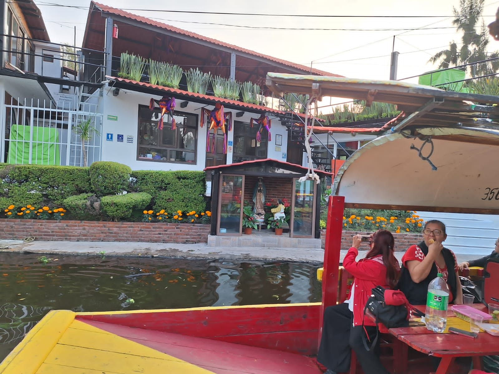
Recorre los hermosos canales de Xochimilco a bordo de nuestras tradicionales trajineras, disfrutando de música, gastronomía y un ambiente lleno de cultura mexicana.
Contamos con recorridos familiares, eventos especiales y atención personalizada para que tu visita sea única.
Vive una experiencia inolvidable recorriendo los canales de Xochimilco en nuestras tradicionales trajineras.
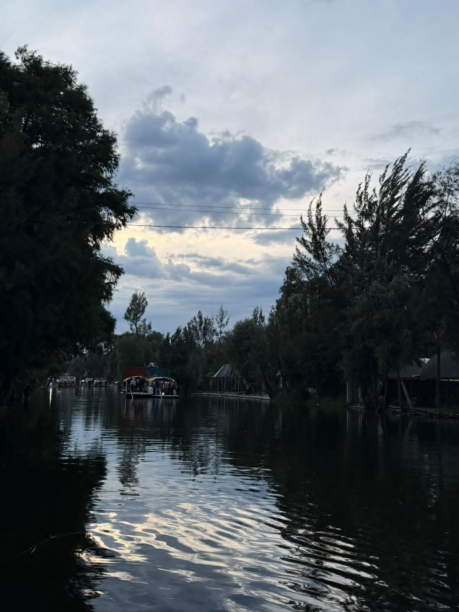
Recorre los canales más representativos de Xochimilco y disfruta de un ambiente lleno de cultura y naturaleza.
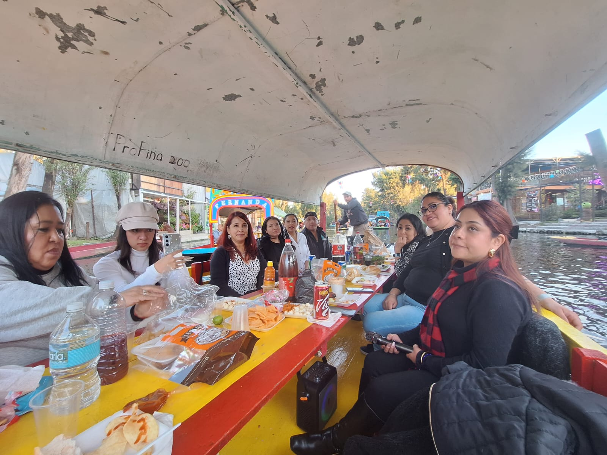
Ideal para convivir con toda la familia y disfrutar de un paseo tranquilo por Xochimilco.
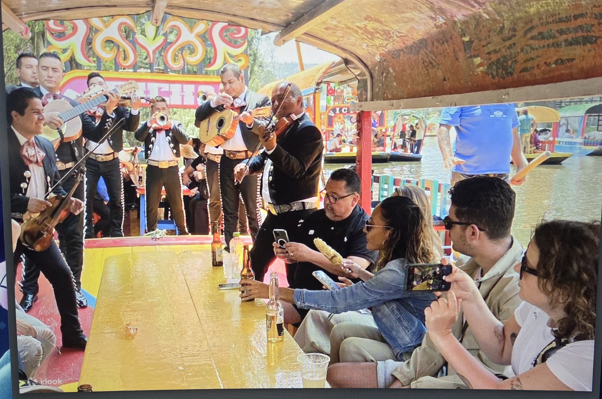
Celebra cumpleaños, aniversarios, serenatas o cualquier ocasión especial a bordo de una trajinera.
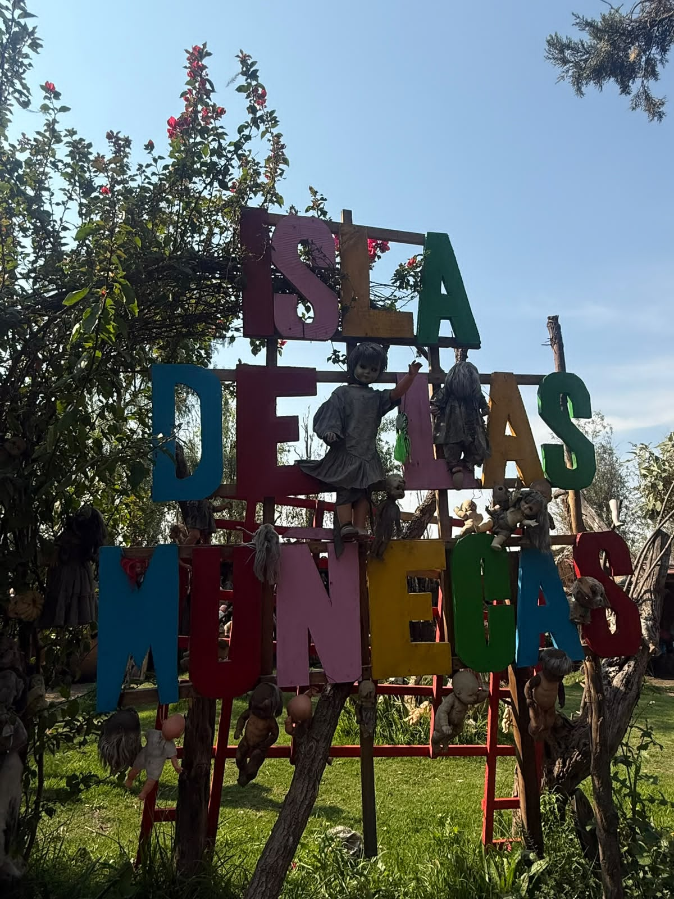
Descubre la parte más natural de Xochimilco en un recorrido de aproximadamente 4 horas, navegando por los canales ecológicos hasta llegar a la Isla de las Muñecas.
Queremos que disfrutes Xochimilco con comodidad, seguridad y una atención cercana.
Vive la experiencia auténtica de recorrer los canales de Xochimilco.
Recibe acompañamiento y atención durante todo tu recorrido.
Organizamos cumpleaños, aniversarios, serenatas y celebraciones.
Conoce los canales ecológicos y los lugares emblemáticos de Xochimilco.
Conoce algunos de los momentos que podrás vivir durante nuestros recorridos por Xochimilco.
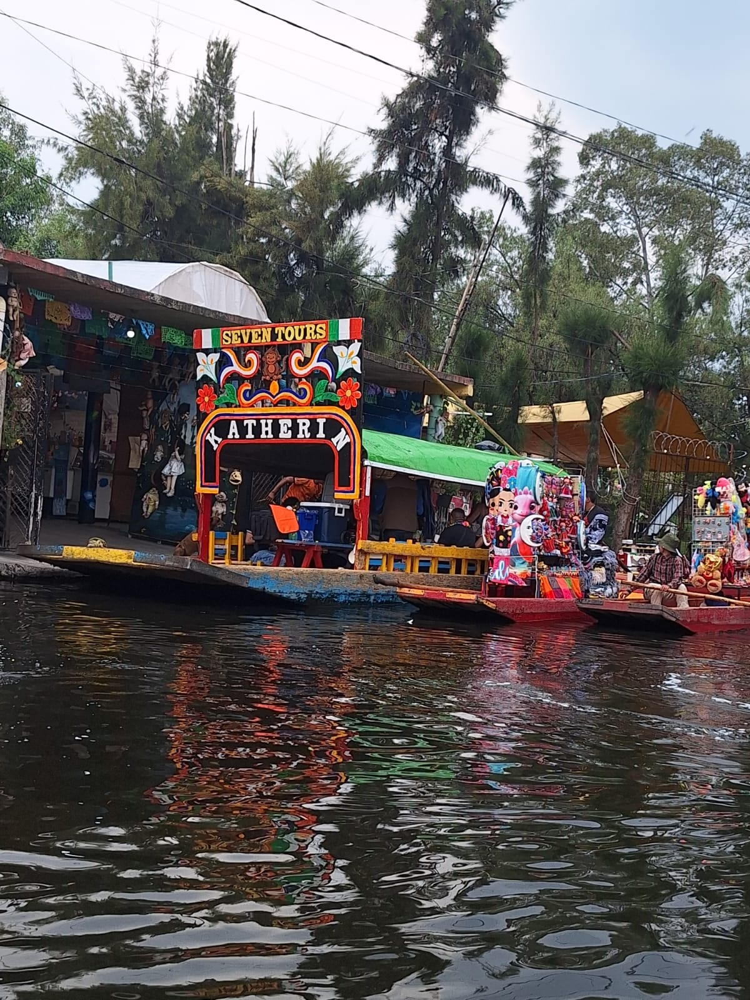
Color, cultura y tradición mexicana.
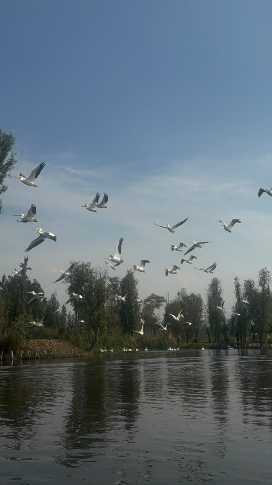
Disfruta un recorrido rodeado de naturaleza.
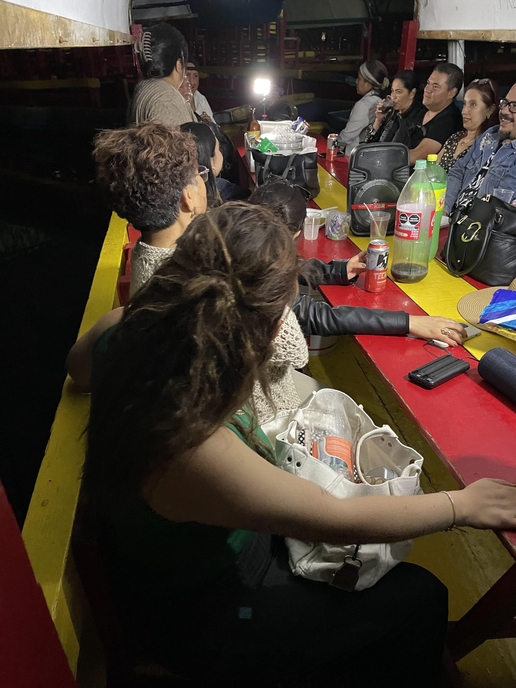
Momentos inolvidables para compartir.
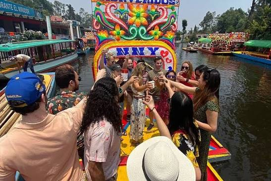
Celebra cumpleaños, aniversarios y reuniones.
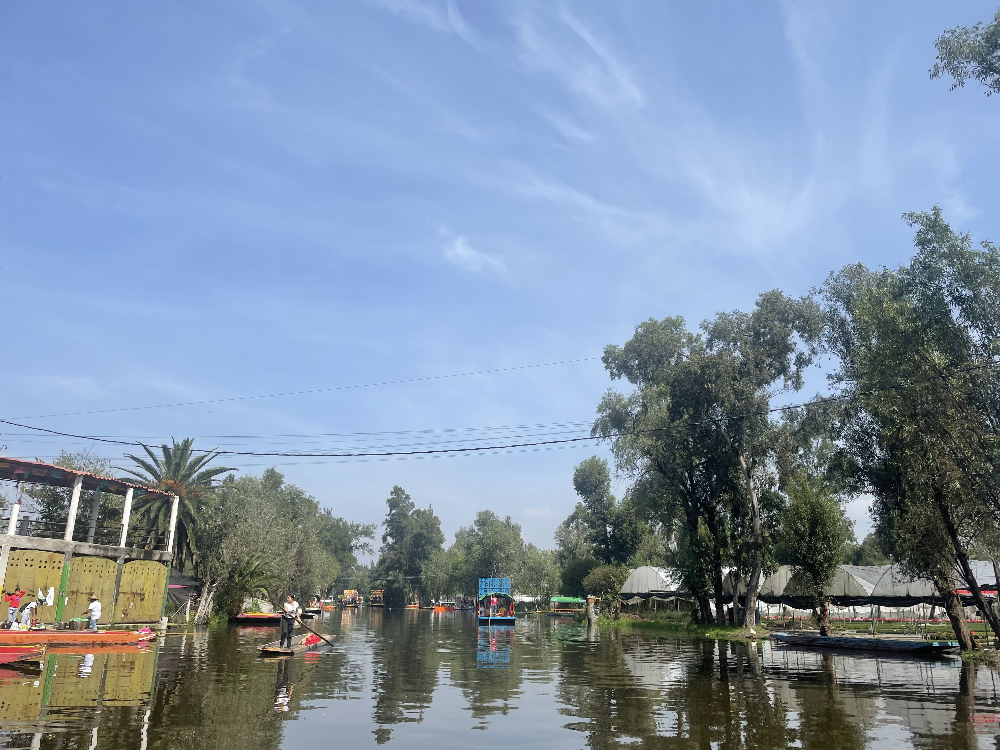
Descubre la zona natural de Xochimilco.
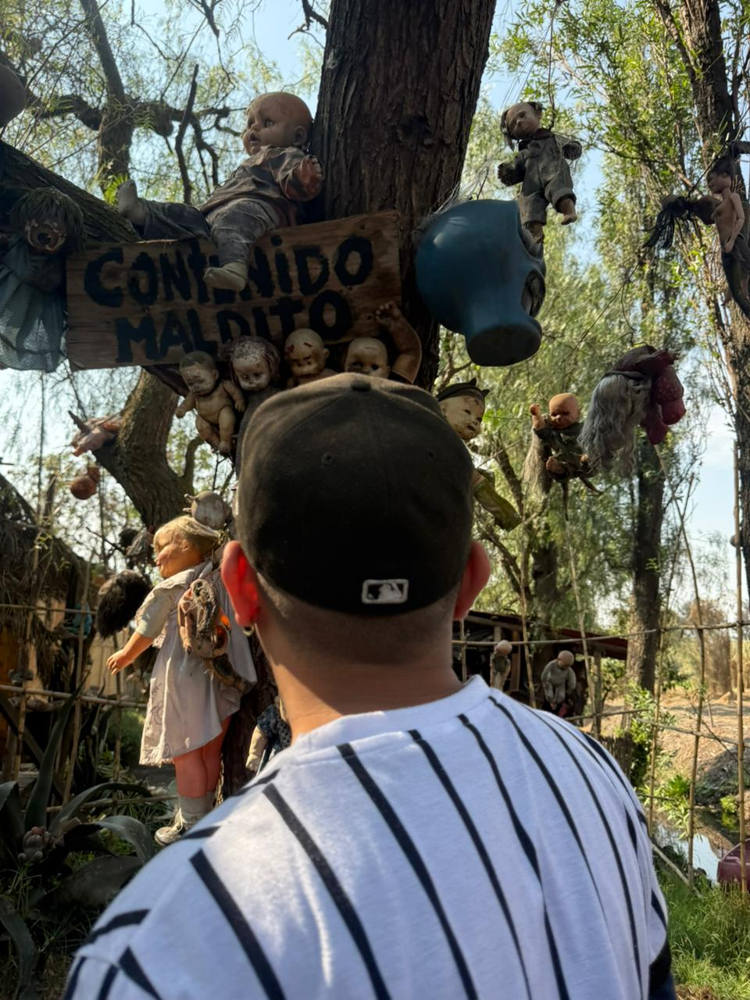
Visita uno de los sitios más famosos de Xochimilco.
Conoce la experiencia de quienes han recorrido los canales de Xochimilco con nosotros.
“Excelente experiencia para disfrutar en familia. La atención fue muy amable y el recorrido estuvo muy divertido.”
“El recorrido ecológico estuvo increíble. Aprendimos mucho sobre Xochimilco y visitamos lugares muy interesantes.”
“Reservamos fácilmente y siempre estuvieron pendientes de nosotros. Sin duda volveríamos a realizar otro recorrido.”
Visítanos y disfruta de un recorrido inolvidable por los canales de Xochimilco.
Xochimilco, Ciudad de México.
Te recomendamos comunicarte antes de tu visita para confirmar disponibilidad y punto de encuentro.
Cómo llegarDisfruta los canales de Xochimilco con tu familia y amigos. Contáctanos para consultar horarios, disponibilidad y opciones de recorrido.
Reservar por WhatsApp